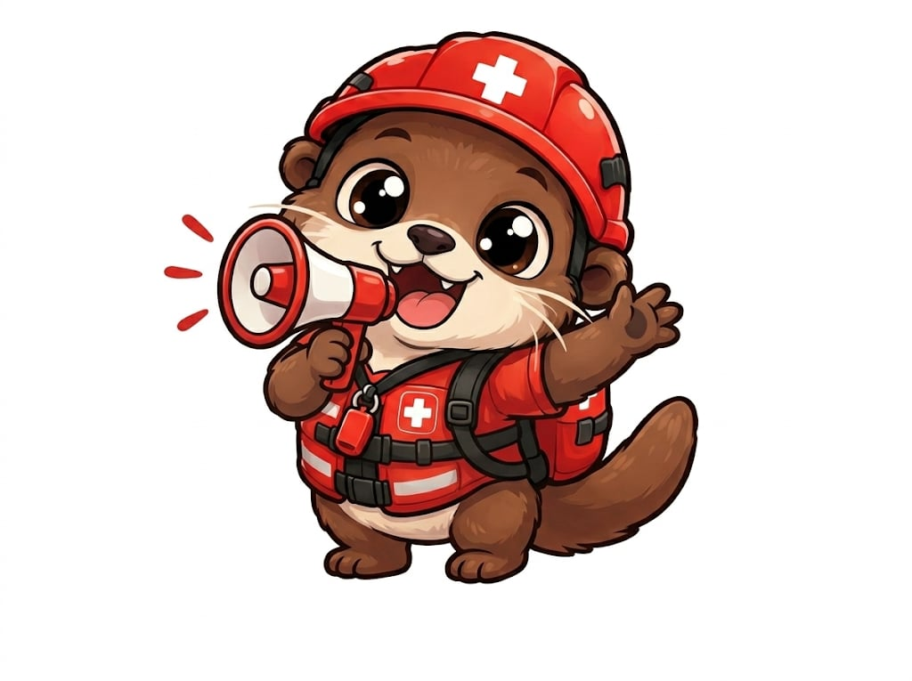
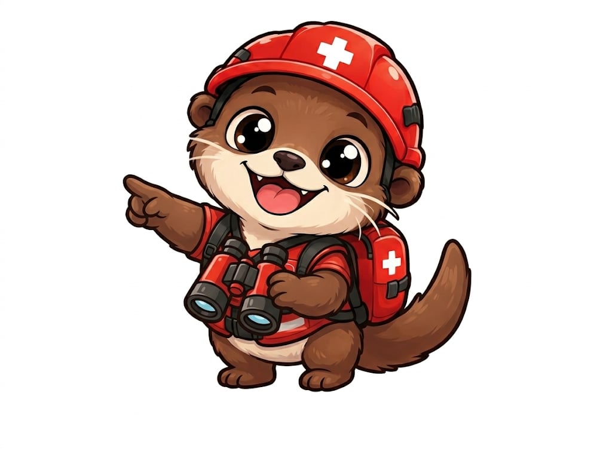
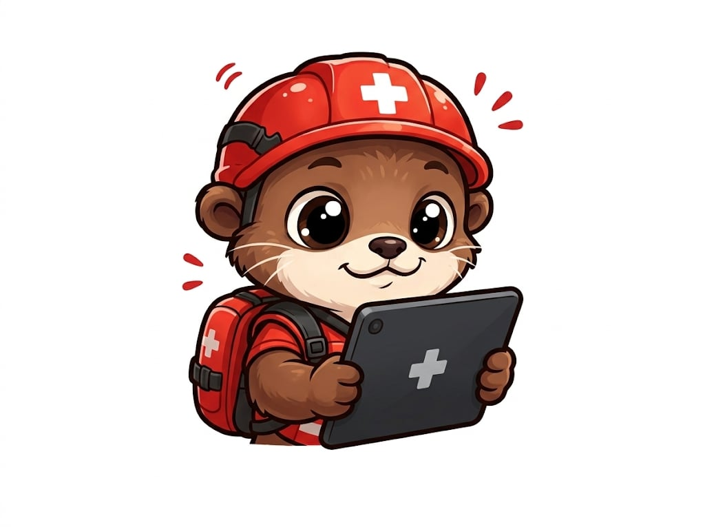
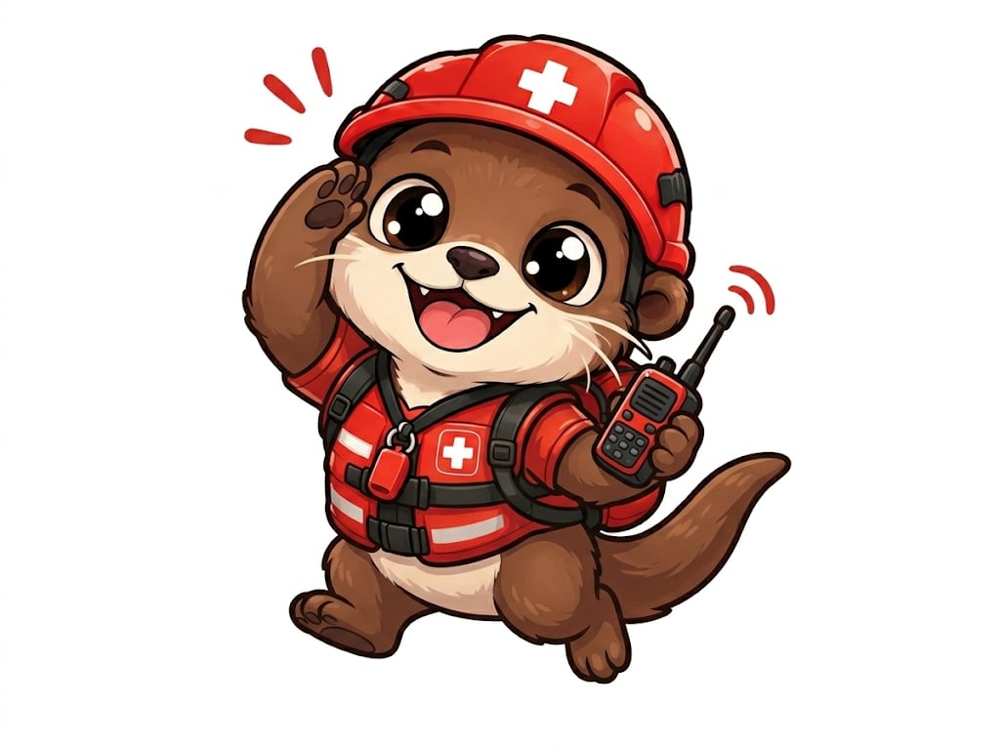
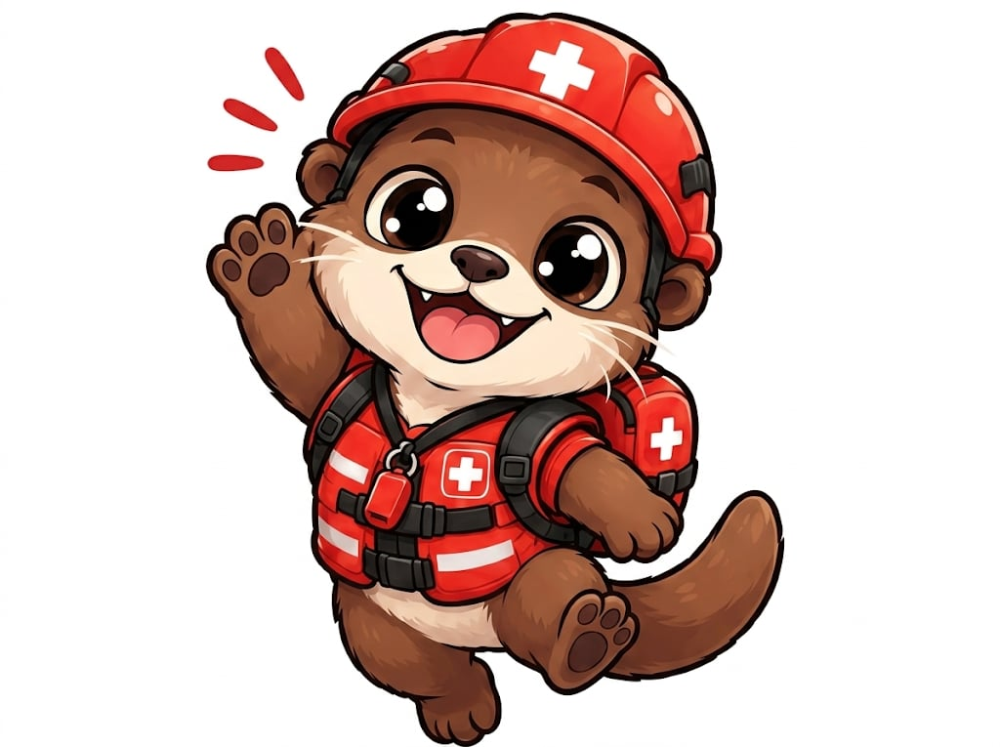
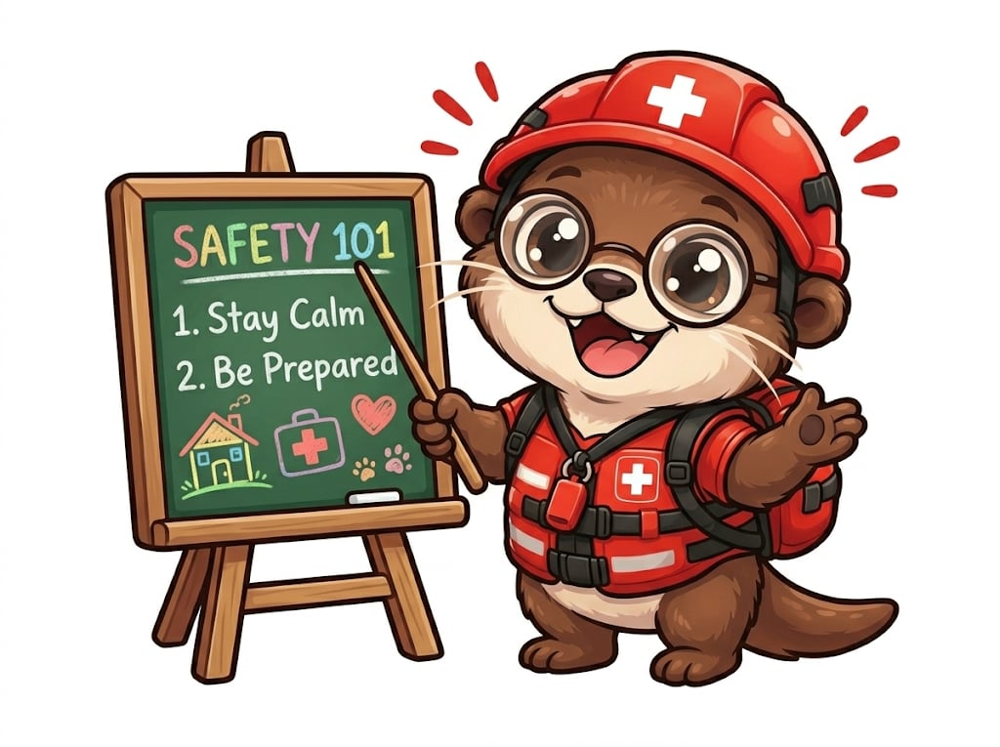
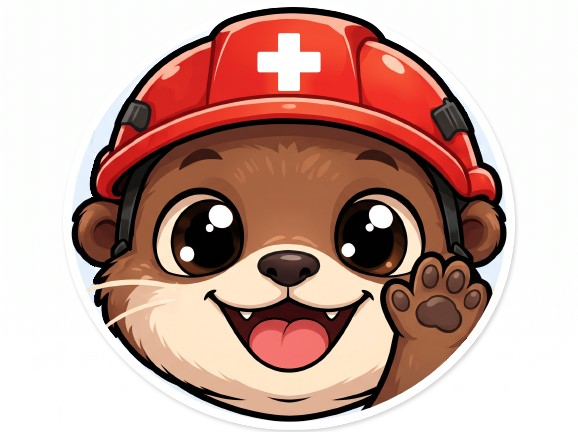

Press the button below. Rescuers will lock onto your beacon.

Emergency beacon is transmitting your location and declared medical conditions over offline mesh.


Declare conditions and blood type for rescuers upon extraction.


Emergency mesh channel ready.
